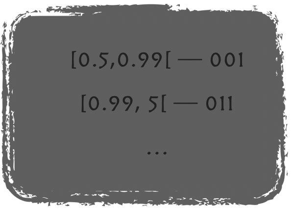

I have been busy with something for work lately…
Alright so this a bit of a crazy idea.
At work, these past few weeks, when I had the time, I had this side project, whereby I would try to create a model to classify texts in two categories, like “important vs not-important”. Sounded easy enough upfront, in my mind even a basic Naïve-Bayes (i.e. supervised learning) classifier would easily do the trick…
How wrong I was. After some testing, and several more or less complex algorithms all failing with similarly low accuracy (and that was enough for me, I needed not check other metrics)… I dug further, and I finally found some texts that were repeated across both classes. That is, yes: same identical complete text but present in the two classes. You know what they say: “Garbage-in, Garbage-out”. Now, to be fair, there was a reason for it, through no fault of the original/historical manual tagging! The thing just wasn’t originally meant to be used as a training dataset for a future Supervised Learning classifier, and the tags used were in fact a mess - from the perspective of this exercise, although they made sense in their original context. Anyhow…
So we went back and started a fresh new (manual) classification system (well, my colleagues did) and right away the newly classified data allowed for a 10% accuracy increase across all models/algorithms tested with it as training/testing set. And that, with a much smaller new dataset. So we were onto something, for sure.
And yet, none of the algorithms still provided very good results. Part of the issue is, some of the texts in both classes are very similar. Me, I’d have a hard time deciding for some of the entries which class should apply (I’ve tried, and failed, so maybe I shouldn’t ask my machine to do something I can’t manually do myself on a small sample…).
As a note, part of that classification exercise is in fact a bit of an art, maybe, and somewhat tacit information is required, experience: Hard to explain, and hence hard to manually write down in rules, which is why the ML approach was suggested in the first place (otherwise, simple rules could have worked?).
An example: My company works in Healthcare, so mentions of hospitals and patients would be an easy give-away, compared to news about say fashion, or transportation…. But most of it isn’t as clear-cut…
RLCS for text, then?
As we (you, my reader, and myself) have learnt over the past few months, the RLCS implementation has a few shortcomings, and today two of them are of particular interest:
The binary input string format issue is going to be a bother
The very high importance, for performance, of the length of said binary input strings, is another one.
Why so?
Well, free text is not great to transform to binary strings. I am however willing to do a simplified test: Generate a TF-IDF (done) of the input texts, keep the main keywords, say top… 100 (rather easy), and instead of real numbers, just encode in binary (i.e. a keyword (stemmed and all, cleaned up) appears or doesn’t, for a particular entry of text). That seems simple enough: just “grep” over new text and look for a particular keyword, and that encodes one variable, and repeat with all 100 top keywords. Here you go: Binary string of length 100.
But 100 variables from a TD-IDF is a brutal simplification, when the original matrix might well have 3 or 4 thousand distinct stemmed-keywords… That’s a big information loss right there. (And I don’t mean to go the way of PCA and such, I could, but explainability of the results would be quite impacted, and so no, not today).
Also, going from real number to binary true/false is another brutal information loss. More on this one in a moment.
“100” here is just an idea, but come to think of it, I don’t think I can do much more than, say, 300? That is, without crawling to a halt in terms of processing time. I haven’t tried yet, and with the improvements in speed of a few weeks back, who knows… :D
Testing the idea
So I am willing to work on this approach starting this very weekend. (Maybe that will spill over the beginning of next week, but since this is actually “for work”, well, I don’t see an issue with merging my personal- and work-time for a few days here…)
What I am hoping is, I can get some machine-provided rules to help with the automated classification of future texts. The texts at work are about Cybersecurity news (but that detail is not in fact important for this post). I just want to create something that will help the analysts in choosing what to worry about and what they can safely discard as noise/irrelevant pieces of news.
One important aspect here will be the False-Positive vs False-Negative ratio, among other things. I am also worried about data-drift, as one keyword in the overall exercise is “news”, which, you know, change over time.
But heck, this is all future issues, the first thing is to get a good enough classifier, that we shall later refine.
And if I make the RLCS package (code) part of the final solution, if I actually show it can be useful for such a practical, real-world scenario, well… But that’s a big “if”.
My own Rosetta Stone
Actually, this is one excuse for this entry:

I have been meaning to do something about the limitation with the binary input strings issue. But instead of changing the code of the RLCS (for now), what if instead I facilitated the future data scientists’ efforts by offering a sort of translation engine?
I could in fact create a function that:
takes a data frame as input (say), or even a matrix.
encodes factors or texts into variables with binary strings. Length of said variables would depend on the number of distinct values (i.e. levels of factors). Now that won’t work for pure free text, but it just might for short tags received as text columns in the DF.
and using the function I demonstrated for the Iris dataset a few weeks back, I can “easily” encode real numbers into “bins” that I can then encode with binary strings. See this entry about how that could work.
Keep track of the above transformations and offer a “translator” to translate back the resulting rules learnt by the RLCS into the original format, or a readable version of it anyway.
I call this the Rosetta Stone for (what I believe are) obvious reasons.
And I shall create such a Rosetta Stone function (or maybe an object?) as part of the RLCS package, for sure. That should help with adoption, or so I would hope.
But maybe for now I focus on the simpler application. Direct binary encoding of top TF-IDF keywords, a simple binary present-or-not encoding. Simplistic, maybe too much so, but until I try… I won’t know, now will I?
Conclusions
Naïve-Bayes, SVM, Random-Forest, Lasso, heck even DNN, you name it: If the data is not good, and two classes are in fact not “somewhat clearly” separable (or no generalized rule will stand), then no amount of processing will create great models. I have tried (thanks to suggestion by other colleagues) more modern approaches, such as full-text embeddings (maybe my approach was simplistic: I used word2vec, with say 200 dimensions, and then averaged full entries vectors… obtaining simple encodings of texts in 200-dimensional vectors, each text one point… It actually kind’a worked, but still wasn’t great, and aside from clustering approaches, well, results would be harder to explain… Anyhow, I digress: This wasn’t a solution. Yet :D)
That said, maybe a subset of good, understandable rules, while not always useful, can make a dent into the problem. And that’s what I’m hoping the application of RLCS to this text classification problem might offer: Find us some rules that will classify perfectly some of the new texts, so that an analyst can skip reading through them, and maybe move on to other news.
Then, where the rule-set won’t actually work, the RLCS output will hopefully tell you it’s not confident (mixed subset of recommended classes) in the proposed classification, and so as an analyst you can go back to other approaches (or say manually review, tag, and save for future improvements), but at least you will have received help for the clear-cut cases, in reviewing some of the news pieces.
So I am hoping I can at the very least reduce the size of the problem, in the short term. And I do believe, this is something the RLCS can help with :)